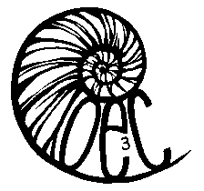

|  44th
Ontario Ecology, Ethology, and Evolution
Colloquium May 8th to 10th, 2014 University of Guelph, Guelph, Ontario Home Venue Program Register Instructions Hotel Guelph Contact |
The conference will be held in Thornborough Building and in the Science Complex at the University of Guelph. View Larger Map [[[put in pics and maps, also once we've got hotel details down include those too.]]] Directions (Driving) From Highway 401 1. Take exit 295 to Highway 6 N/Hanlon Parkway. 2. Turn right on Stone Road W. 3. Destination on left … Parking? From Highway 7 (Kitchener, Waterloo) 1. Continue onto Woodlawn Road W. 2. Turn left onto Highway 6/Hanlon Parkway. 3. Turn left on Stone Road W. 4. Parking From Highway 6 South (Hamilton) 1. Continue onto Highway 6 S/Brock Road S. 2. Continue onto Brock Road N, Gordon Street. 3. Turn right on Stone Road E. 4. Destination on left … Parking? Guelph bus information can be found at the Guelph Transit website. Adult/student fare is $3.00 in exact cash. Nearby Conferences May 5th, 2014- Southern Ontario Neuroscience Association Annual Meeting, Western University, London, Ontario May 14th, 2014 - Campbell Centre for the Study of Animal Welfare Research Day, University of Guelph, Guelph, Ontario |
| OE3C 2014
website authored using open-source software: www.kompozer.net |